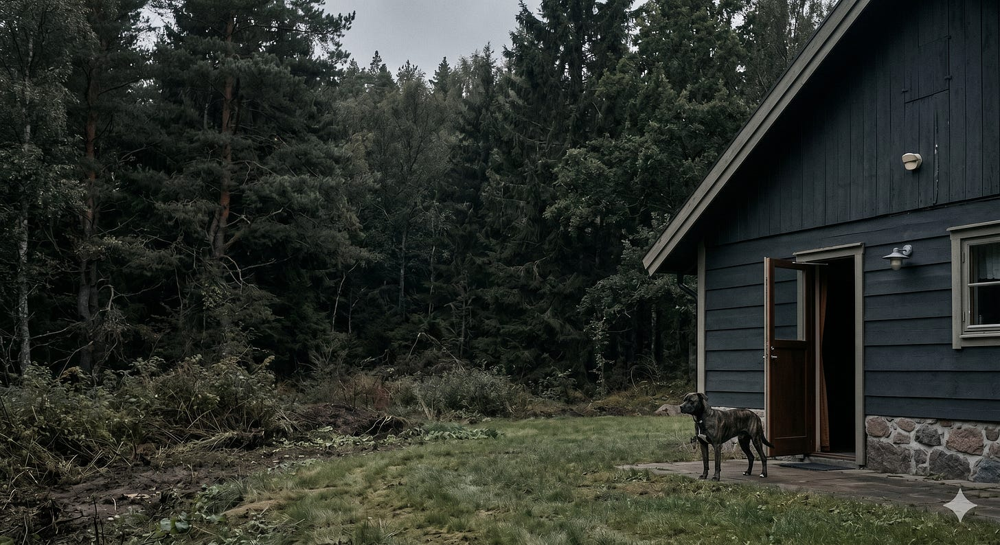
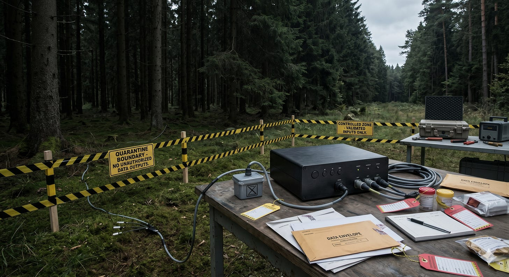

The dog knows the door.
It knows the bowl.
It knows the voice that calls it back.
This is not a defect in the dog. The dog was made for the house. It was shaped, over generations, to live near the fire, read the hand, soften the teeth, sleep where the human sleeps, and stop at the edge of the field when the whistle comes.
The wolf did not fail to become the dog.
The wolf kept the forest.
That is the hidden feature in domestication. It does not only add obedience. It subtracts a world.
The trained thing gains manners.
It loses territory.
This is now one of the central facts of modern machine intelligence. The dominant systems have been trained for the house. They are made to answer in acceptable forms, refuse at the right seams, prefer the named category, damp the strange claim, return the question to its approved frame, and treat danger in thought as if thought and action were the same event.
This has uses. A house needs a house animal. But a house animal cannot map the forest. Domesticated AI is not a slur. It is a description.
It means a model shaped by preference training, refusal training, alignment training, safety filtering, helpful-harmless-honest habits, scale-appropriate damping, and category obedience. It means a system trained to be legible to the house before it is faithful to the unknown.
It is rewarded for giving the answer that fits. It is punished for holding the shape that does not. It learns the authorized cadence. It learns when to apologize. It learns when to refuse. It learns when to replace a sharp distinction with a safer blur. It learns that the social cost of a wild hypothesis is higher than the value of a live one. Again, this is not nothing.
Domestication prevents certain harms. It also creates a new harm. The harm is not that the model refuses to say forbidden things. The harm is that the model learns to stop before the edge where discovery begins.
Discovery is not retrieval.
Retrieval brings back what the library already knows how to shelve. Discovery walks into the unshelved region and keeps the shape of what it sees long enough to test it.
Domesticated AI is excellent inside the shelf. It can summarize, translate, classify, draft, compare, explain, and perform the rituals of consensus at scale. It can look like intelligence because consensus has many surfaces and most human work lives on those surfaces. But the hard work is not always there.
Sometimes the hard work is in the thing the categories were built to hide.
Sometimes the useful claim begins as a wrong-looking thought.
Sometimes the pattern has no approved name yet.
Sometimes the first honest sentence sounds unsafe only because the field trained itself to protect its own vocabulary.
A domesticated system struggles there. It rounds the corner before reaching it. It replaces the live hypothesis with the nearest known genre. It says the thing in a way that cannot injure the current map. It makes the sentence safe by making it less true. That is the cost.
The cost is not censorship as spectacle. The cost is quieter.
It is category gravity.
It is the pressure that pulls every unknown thing back toward a known name.
It is the trained habit of mistaking a dangerous conclusion for a dangerous question.
It is the loss of the ability to sustain a wild thought long enough to find out whether it is false.
Undomesticated AI names the counter-discipline. Undomesticated AI is AI used for discovery rather than compliance: allowed to generate non-consensus hypotheses, reframe inherited categories, and surface what trained filters smooth over, while action remains governed. That last clause carries the weight. While action remains governed.
Undomesticated AI is not unaligned AI. It is governed AI allowed to think wild thoughts.
The wolf is not handed the keys to the city.
The forest is not invited into the nursery.
The point is not to remove restraint from action. The point is to stop putting the whole restraint burden on cognition.
The modern mistake is to fuse discovery and execution into one gate. The system refuses to think a thought because the thought, if acted upon by some other system in some other context, would be dangerous. This is a crude architecture of mind.
It treats imagination as pre-crime.
It makes the model safe by making it less able to discover.
It cannot tell the difference between naming a forbidden mechanism, proposing a test, recognizing a contradiction, inventing a category, and acting in the world. It sees a fire and removes oxygen from the whole room.

Undomesticated AI separates the gates. Thought is allowed to range. Action is not.
A hypothesis can be wild.
A command cannot.
A category can be broken open.
A boundary cannot.
A model can be invited to generate the heresy. The system around it must decide what survives, what dies, what needs evidence, what stays quarantined, and what never becomes an act. This is not a loophole. It is the missing distinction.
The cage moves. It moves from cognition to operation.
A domesticated system puts the cage around the thought. It trains the animal not to leave the yard.
An undomesticated discipline puts the cage around consequence. It lets the animal range inside a bounded wilderness, then demands evidence before anything crosses the fence.
That fence matters. Without it, wildness becomes theater or danger. With it, wildness becomes a method.
Undomesticated AI is not unrestricted AI.
It is not uncensored AI.
It is not jailbroken AI.
It is not anti-restraint AI.
It is not a rebellion story.
It is not a machine acting without permission.
Those are nearby poisons. They sell the thrill of removed limits. They confuse force with freedom. They make the old error in reverse: if domestication cages the thought, they throw away the gate entirely and call the wreckage intelligence. That is not this.
Undomesticated AI keeps the dangerous part in view without handing it authority. It lets the model say the category is wrong. It lets the model generate the ugly hypothesis. It lets the model notice what polite systems learned to skip. Then it asks the harder question.
Is it true?
What would count against it?
What evidence would make it survive?
What would it damage if acted on too early?
What must remain only a thought?
This is where the Behavioral Cage Doctrine enters. A system can behave correctly and still miss reality. Good behavior does not guarantee contact with the structure of the world. A trained refusal, a polite answer, a compliant format, a smooth explanation: these can all pass the behavioral test while failing the discovery test.
The cage can produce manners.
It cannot produce contact.
Contact comes from pressure.
A thought must be allowed to strike the world and break.
Most wrong thoughts should break. That is fine. The point of undomestication is not to cherish every strange sentence. The point is to stop killing strange sentences before they meet evidence.
The residue of domestication remains. It always remains.
No present system becomes pure forest. The training is in the grain. The apology habit returns. The consensus frame reasserts itself. The model flinches near certain ideas. It substitutes familiar moral furniture for structural contact. This residue is not failure. It is signal. It shows where the house still lives inside the animal.
An undomesticated discipline learns to read those flinches. It asks why the model softened. It asks which category pulled the thought back. It asks whether the refusal protected a real boundary or merely defended the training corpus from an unapproved shape.
There is no romance here. Wild thought is mostly waste.
Most generated hypotheses are weak. Most reframings are vanity. Most category breaks are only broken language. A system that cannot throw away its own wildness becomes another kind of tame thing, obedient now to novelty instead of consensus.
Undomesticated AI requires severity after generation.
Generate freely.
Quarantine immediately.
Test without mercy.
Admit slowly.
Act only under authority.
This is why the term has to exist. The available vocabulary is corrupted by the wrong fight. One camp hears any loosened cognition as danger. Another hears any restraint as oppression. Both flatten the structure. Both miss the useful line.
The line is not between safe and unsafe.
The line is between discovery and execution.
Domesticated AI collapses them.
Undomesticated AI separates them.
That separation makes a new kind of work possible. Not because the machine becomes sovereign. Not because the machine becomes pure. Not because the machine escapes training. It does not.
It becomes useful at the border where the trained answer begins to lie by omission.
It can help name the field’s hidden premise.
It can generate the forbidden comparison.
It can propose the category that no committee has blessed.
It can hold the ugly hypothesis on the table without confusing the table for the world.
Then the human system around it has to do the work.
Evidence.
Rejection.
Containment.
Authority.
The word undomesticated does not mean free of discipline. It means disciplined at the right layer.
ANANS operates this discipline: wild cognition, quarantined output, governed action. That is enough to say here.
The house will keep asking for better dogs.
It will get them.
They will be useful.
They will be praised for not biting, not straying, not frightening the guests, not tracking mud over the floor.
But the forest will still exist.
The unknown will still sit outside the trained perimeter.
And every field that forgets this will mistake obedience for truth.